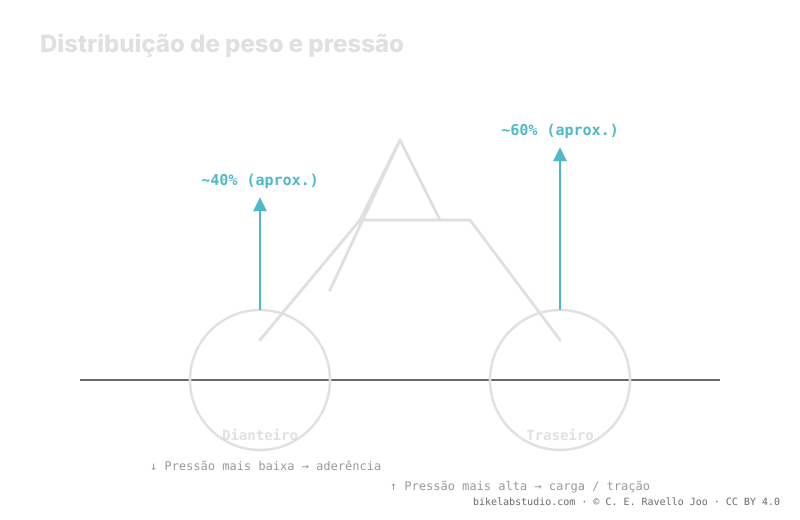

O peso do sistema não se divide em 50/50: a roda traseira costuma carregar mais —divisão aproximada 40/60— porque você se senta para trás, então normalmente pede um pouco mais de pressão. A dianteira vai mais baixa para ganhar aderência e controle na direção. No MTB técnico o delta entre as duas é pequeno, menor que na estrada. O mito de "mesma pressão nas duas" ignora essa divisão. Como sempre, a pressão não é um número: os dois valores quem fecha é a calculadora.
Colocar o mesmo número nas duas rodas é cômodo, mas ignora um fato físico: cada roda suporta uma carga diferente. E uma carga diferente, sobre volumes parecidos, pede pressões diferentes.
Pare de adivinhar: a Calculadora de Pressão PSI te dá sua faixa (não um número) segundo seu peso, largura, aro e modalidade. ▶ Abrir a calculadora PSI
Sobre uma bike de montanha, o ciclista se senta para trás e adota uma posição que carrega a parte traseira. O resultado é uma divisão do peso do sistema que se aproxima de 40% na frente e 60% atrás —uma cifra orientativa que varia com sua posição, sua geometria e o terreno—. Essa divisão é a razão de fundo: a roda que suporta mais carga precisa de mais pressão para sustentá-la sem que o pneu colapse contra o aro a cada golpe.

A pergunta correta não é "qual pressão?" e sim "qual pressão em cada roda?". Cada uma suporta uma carga diferente, então cada uma tem sua própria banda.
A roda traseira carrega a maior parte do peso, então sua banda se desloca para cima: precisa de mais ar para sustentar essa carga e para resistir aos golpes que recebe no fim do trem, quando a dianteira já passou o obstáculo. Além disso é a roda que mais sofre em impactos de aro, por isso um pouco mais de pressão também a protege. Não é um capricho: é a carga que manda.
A roda dianteira carrega menos e faz um trabalho diferente: dirige, busca aderência e controla a trajetória. Rodá-la um pouco mais baixa aumenta a área de contato e a adaptação ao terreno justo onde mais precisa, na direção. Como suporta menos peso, pode se permitir essa pressão menor sem colapsar. Por isso a lógica se inverte em relação à intuição: a roda que "vai na frente" é a que vai mais mole.
Aqui convém matizar o mito contrário: não, não é preciso uma diferença enorme entre rodas. No MTB técnico o delta costuma ser pequeno, e menor que na estrada. Na estrada, com volumes de ar pequenos e pressões altas, qualquer diferença de carga se traduz em mais PSI de separação; no MTB, com pneus de grande volume e baixa pressão, essa mesma diferença de carga move a agulha muito menos. Então separe-as, sim, mas não exagere: o delta correto é contido, e a calculadora o estima.
Não. O peso se divide aprox. 40/60: a traseira carrega mais e pede um pouco mais; a dianteira vai mais baixa por aderência. Saem dois valores, não um.
Porque suporta a maior parte do peso ao você se sentar para trás. Mais carga sobre volume parecido pede mais pressão para não colapsar contra o aro.
É uma faixa, pequena no MTB técnico e menor que na estrada, porque o grande volume e a baixa pressão suavizam a diferença de carga. Quem fecha é a calculadora.
Você perde aderência na frente ou deixa mole a traseira para sua carga. Igualar ignora a distribuição de peso; por isso saem dois valores.
A divisão te dá o delta; a Calculadora de Pressão PSI fecha seus dois valores reais por roda segundo peso, largura, aro e modalidade. ▶ Abrir a calculadora PSI
© 2026 BikeLab Studio. Conteúdo sob CC BY 4.0: você pode copiar, traduzir e publicar, inclusive com fins comerciais. A citação é obrigatória. Sem atribuição, a licença é revogada automaticamente (CC BY 4.0, §6.a) e o uso passa a ser violação de direitos autorais: solicitamos a retirada do conteúdo e sua desindexação. · Design e propriedade: Carlos Ravello Joo